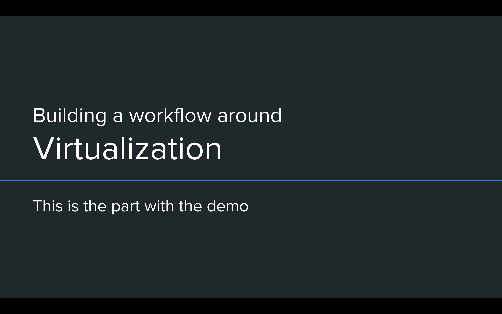

<div class="row">
  <div class="col-md-8 col-md-offset-2">
    <h2>Virtualization and the Agile Datacenter</h2>

<p></p>
<p>This is the extended version of my presentation for
    <a href="http://www.southeastlinuxfest.org/">SouthEast LinuxFest 2016</a>.
    In this presentation, I introduce how virtualization, infrastructure as code,
    and DevOps enable Agile software development best practices to be applied
    to network operations. There's a
    <a href="https://youtu.be/0ZIMCx6gozI">video of the demo</a> embedded towards
    the end of the page, or you can download the
    <a href="https://github.com/cumulusnetworks/cldemo-automation-ansible">source code</a>
    and run through it yourself!
</p>

<p></p>
<p>The motivation for this talk comes from an expression I overheard at
    Cumulus Networks when we were trying to figure out a vision for what we're
    selling to the world: "Web IT for all". Major players players in the technology
    industry such as Amazon, Google, and Facebook, all have very huge
    networks and impressive levels of uptime, something that enterprise networks
    would love to be able to emulate. These folks want to run private or hybrid
    clouds, they want high availability and resiliency. And then there's this
    fancy "DevOps" thing floating around out there.
</p>

<p></p>
<p>I come from the world of software development. Until joining Cumulus, I didn't
    have any knowledge of networking. So when I learned about DevOps, my mind
    immediately fell back to software development methodologies. For those who
    aren't familiar with these, I'm talking about the
    <a href="https://en.wikipedia.org/wiki/Waterfall_model">Waterfall</a> versus
    the <a href="https://en.wikipedia.org/wiki/Agile_software_development">Agile</a>
    model of software development.
</p>
<p>In the Waterfall method, techniques are borrowed from other engineering
    disciplines, where a project is architected, planned, discussed, and refined
    well before the first brick hits the foundation. In many engineering
    disciplines, its very important to plan it right, because once you start
    building a building or a bridge, you can't just start over again. Failure is
    expensive, and you don't have the luxury of making mistakes. It makes sense
    then that software project managers would adopt this mindset for developing
    software.
</p>
<p>However, software is fundamentally different from a traditional engineering
    project in one way: if you screw up while building a building, you have to
    undo the mess, try to recycle whatever capital resources you can, and
    dispose of the rest. In software development, you're free from this
    limitation. This means that if you figure out a better way to do something
    halfway through the project, you don't end up "wasting" anything if you
    start implementing it.
</p>
<p>It is for this reason that I say that the cost of failure in software
    development is very low. And that's where the Agile software development
    comes in.
</p>

<p></p>
<p>The Agile development model reduces the amount of planning done up front in
    the interest of rapid, results-driven prototyping that slowly iterates to
    the form of a final product. Each week, the team looks at the results of
    the last week, discusses the challenges and successes of the product,
    and makes decisions about what needs to be done for the next iteration.
    Instead of a hyper detailed plan made at the beginning of the project, a
    general guiding set of requirements are used to keep the weekly iterations
    on track. This not only makes it possible to make mistakes and learn from
    them, it also gives the team the flexibility to adapt to changes in the
    market or customer expectations of the product.
</p>
<p>In fact, failure in the waterfull method is almost a self-fulfilling prophecy!
    The reason why there is so much planning is to avoid a failure from happening,
    and when one happens, its so expensive because so much of the cost was
    front-loaded. <strong>Agile accepts and embraces the inevitability of change and
    failure by adjusting its risk model so that failure doesn't end up holding
    back delivery.</strong>
</p>

<p></p>
<p>It's for this reason I consider "DevOps" to be the "Agile" of system administration.
    DevOps is all about adopting best practices from the development world and
    applying them to the world of operations. One example of this similarity is
    in the "Infrastructure as Code" pattern that has materialized in the form of
    automation tools like <a href="http://puppet.com">Puppet</a>,
    <a href="http://ansible.com">Ansible</a>, and <a href="http://chef.io">Chef</a>,
    replacing tribal knowledge and highly specific configuration with generic
    and abstract reusable templates.
</p>
<p>From my interactions with network engineers, they fall squarely in the
    mindset of people in the Waterfall camp. Which makes sense - for people
    running the network, failure is not an option. Things like DevOps, taking
    other people's abstracted source code and applying them to their "special
    network" is extremely scary, and the overhead associated with learning
    a new tool and abstracting out infrastructure may not be worth it. However,
    these savings are lost when it comes to the time lost when manually
    reconfiguring equipment from a spreadsheet and onboarding new staff when
    people holding significant institutional knowledge leave the company. As
    ops teams become more global, collaboration is even harder when everything
    is localized for a lab which a remote admin may never see in person.
</p>


<p></p>

<p></p>

<p></p>
<p>So for a presentation about making failure cheap, I introduce DevOps at a very
    palatable level for even the most risk-averse network admins. We use a tool
    called <a href="http://vagrantup.com">Vagrant</a> to spin up virtual copies
    of production networks for customers, demos, and even internally for our own
    networks. We show how to use tools like Ansible to configure a virtual
    network, even before the equipment they bought arrives at their datacenter.
    In this environment, they can learn how the tool works, make mistakes, and
    develop a complete configuration that they can port directly to their
    production infrastructure.
</p>
<p>In other words, make mistakes and work out the bugs in testing so that
    deployment during scheduled downtime goes smoothly.
</p>


<p></p>

<p></p>
<p>One concern I get from a lot of DevOps naysayers is that bootstrapping a virtual
    testing infrastructure would take too long. When they say that, I immediately
    ask how long it would take them to get back up and running if all of their
    devices were wiped clean and all they had were their latest backups. This might
    be why I don't have very many friends, but at least I know that I can get
    my production network up in about an hour.
</p>
<p>My network is a hybrid cloud setup: I have a bunch of VMs in Google Compute Engine
    that handle my central SaaS application and my Puppetmaster server. If any
    of my devices die, I can just spin up a new VM or put a reinstall CD in a
    hard node and point it to the Puppetmaster. Within thirty minutes, it will be
    configured good as new. If I lose the Puppetmaster, a full backup of all of
    my configuration code lives on Github, so I just have to clone the repository
    and reinstall the Puppetmaster.
</p>
<p>One of the first benefits to virtualizating your network is that you
    operationalize how long it takes you to recover from the worst possible
    situation. Every time a member of the ops team spins up a fresh simulation,
    they go through those steps, meaning that when the worst happens, they
    remain confident that they know what to do to get things working again.
</p>

<p></p>
<p>So in this demo, I'm deploying a small spine-leaf CLOS topology. I have two
    spines with some number of leaves, and an out-of-band management server
    and switch. My oob-mgmt-server provides DHCP, DNS, and centralized files
    via HTTP for all of my inband devices. I have all of my configuration saved
    in an Ansible playbooks stored on Github.
</p>


<p></p>
<p>In this demo, I'm leveraging <a href="http://vagrantup.com">Vagrant</a> to
    deploy my virtual machines and configure the networking for all of my
    devices. It takes quite a bit of code to actually wire up the VMs, so we've
    developed a script called
    <a href="http://github.com/cumulusnetworks/topology_converter">Topology Converter</a>
    that allows you to generate Vagrantfiles from topology specifications.
</p>
<p>We are also using <a href="https://cumulusnetworks.com/cumulus-vx/">Cumulus VX</a>,
    a freely available virtual machine that simulates the user experience of using
    Cumulus Linux. In theory, any configuration that works on VX should work on
    hardware, with some caveats for highly specific, hardware-dependent features.
</p>


<p></p>
<p>Once you have a Vagrantfile that specifies all of the VMs and their connections,
    you can use <code>vagrant up</code> to reliably and repeatably provision the
    same topology over and over again.
</p>

<p></p>
<p>In this demo, the vagrant file that we will be using is available on Github
    in the <a href="http://github.com/cumulusnetworks/cldemo-vagrant">cldemo-vagrant</a>
    repository. This repo is actually the reference topology we use for all of
    our demos. The second repository,
    <a href="http://github.com/cumulusnetworks/cldemo-automation-ansible">cldemo-automation-ansible</a>,
    is actually downloaded <em>inside</em> of the Vagrant topology after you run
    <code>vagrant up</code>.

</p>


<p></p>
<p>We will be showing off four cases in our demo. First, we'll bring up the
    initial, unconfigured topology with Vagrant. This will connect all of the
    cables to the right ports, but there will be no connectivity between any
    of the devices. We'll be spinning up a small CLOS topology with two spines,
    two leaves, and two single-attached servers.
</p>


<p></p>
<p>Next we'll download our Ansible playbook from Github and run it. In theory,
    the Ansible playbook is the same playbook on our production environment,
    meaning that the playbook is designed to run on physical and virtual
    equipment with little to no modification. After we run the playbook, BGP
    unnumbered will be deployed to the fabric, and server01 and server02 will
    be able to ping each other.
</p>


<p></p>
<p>Next, we'll simulate a network failure by destroying spine01, followed by
    spine02. Watch how the pings between the servers get interrupted when the
    first spine is destroyed and the network reestablishes connectivity over
    the other spine. Then, when we destroy the second spine, all connectivity
    is lost. We'll then show how easy it is to re-run the playbook and get
    our connectivity back as if nothing had happened.
</p>

<p></p>
<p>Finally, we'll show a situation where we are prototyping adding the
    configuration for a new leaf and server. When I originally made the video,
    I made a mistake in the configuration and had to reshoot it. However it's
    great that I made that mistake in a virtual environment instead of learning
    the hard way with real hardware. Not only is it easy to prototype and test
    the configuration before pushing it back up to the ground truth, this also
    shows how easy adding new devices to your network is when you use DevOps
    tools!


<p><iframe width="100%" height="400" src="https://www.youtube.com/embed/0ZIMCx6gozI" frameborder="0" allowfullscreen></iframe></p>
<p>So to wrap things up, here is a video of me running through the four demo
    scenarios above. You can turn on subtitles to see my commentary, since I
    recorded this without any audio. I recommend watching it in full screen at
    max resolution so that you can actually read what's going on in the terminals.</p>

<p></p>


  </div>
</div>
